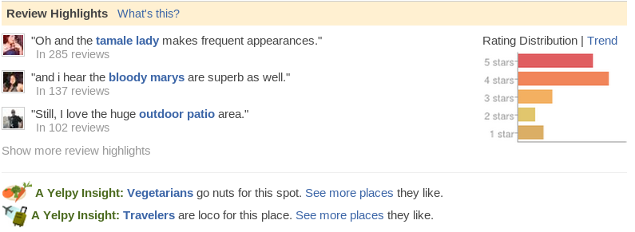

YelpBigData
Table of Contents
1 Yelp's Big Data center
Jim Blomo
Engineering Manager - Yelp
Lecturer - UC Berkeley
1.1 AWS usage notes
- We use EMR for batch processing
- Site is hosted in our own datacenters
2 How Big?
- 250+ GB compressed logs / day
- 7+ TB in databases

2.1 Dimensionality notes
- If you hear 10 talks on Big Data, you'll likely hear 11 definitions
- Liberal def: anytime you can't process data on one computer
- there's no excuse with things like Hadoop/EMR available
- Our Big Data is TBs of logs and DB data, growing quickly
- Database mostly stored in MySQL
- An unusual feature of our data is the variety:
- review text, photos, checkins, menu data, friends, PMs
- Interesting mix of structured and unstructured. And unstructured IN structured!
- Derived data additionally stored in S3, HyperTable
3 Solutions
- Analytics
- Search Relevance, Usage Trends
- Data summarization
- Review Highlights, Search Behavior
- Machine Learning
- Spam Filtering, Advertising Optimization
3.1 Details notes
- Looking at mobile vs. desktop usage
- What types of ads are clicked by what types of people?
- What are the most important factors in a search? What categories are correlated with a query?
- Spam and Advertising have user models that we update nightly
- These models use a mixture of structured data from DB dumps and log data
4 Review Highlights

4.1 Example notes
- Unstructured data (reviews) in structured data (review table in DB)
- Find common phrases in business, that are relatively unique across businesses
- One of my favorite bars in SF
- Get a sense of the local flavor of the business without reading literally 2000 reviews
5 Query to Category
- When people search for Pool, what do they mean?
- Swimming pool?
- Billiards?
- Home pool cleaning?
5.1 Query to Category
- When people search for Pool, what do they mean?
- Swimming pool?
- Billiards?
- Home pool cleaning?

5.1.1 Unstructured Data notes
- We need to look at user behavior to better understand intent
- Use search logs to connect searches with the businesses customers end up on
- Different per country? Per city? Per person?
6 Developer Speed two_col
- Try big ideas in development
- Deploy without coordination
- Launch innovative features faster than competition
6.1 Non Blocking notes
- Developers are never blocked on resources
- We spend very little effort maintaining a cluster
- Zero effort on thinking about how to properly schedule dev jobs, prod jobs, and dependencies inbetween
- Products go out as soon as they are ready
- Includes access to logs: S3 scales as a datastore
7 mrjob two_col

- Hadoop Streaming jobs in Python
- Runs locally, on Hadoop, in EMR
- Higher level abstractions: chaining jobs together
7.1 Details notes
- OpenSource solution: mrjob, runs via Hadoop Streaming
- Python, specify a class with a mapper and reducer, done
- Let's developers test on their local workstation on smaller sets, spin up EMR clusters when needed
- Can also run on in-house Hadoop cluster
- Additionally manages dependencies, bootstraping
8 Word Count
from mrjob.job import MRJob class MRWordCounter(MRJob): def mapper(self, key, line): for word in line.split(): yield word, 1 def reducer(self, word, occurrences): yield word, sum(occurrences) if __name__ == '__main__': MRWordCounter.run()
8.1 Details notes
- No demo complete without good old word count!
- If you're used to Hadoop, you'll see main differences are
- untyped key-value inuput
yieldinstead ofemit
- Developers can test this locally, including inline in unit tests, then send to AWS EMR on a much larger set of data
- You can iterate very quickly on your jobs
9 Open Source Suite
- mrjob
- Run MapReduce jobs on Hadoop or Amazon Web Services
- s3mysqldump
- Dump MySQL tables to s3, and parse them
- EMRio
- Elastic MapReduce instance optimizer
- tron
- Next generation batch process scheduling and management
- firefly
- web application aimed at powerful, flexible time series graphing
- Many More
- opensource.yelp.com and github.com/Yelp
9.1 Too many to talk about notes
- We use mrjob for processing MySQL data as well:
s3mysqldumpregularly takes MySQL data and uploads it for S3 for general processing
10 Hiring center

10.1 We are Hiring notes
- Position on almost every team
- We want to connect everybody on earth with the great local businesses in their area
- Need your help to make more open source solutions, apply them to interesting problems